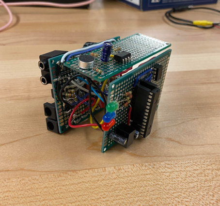
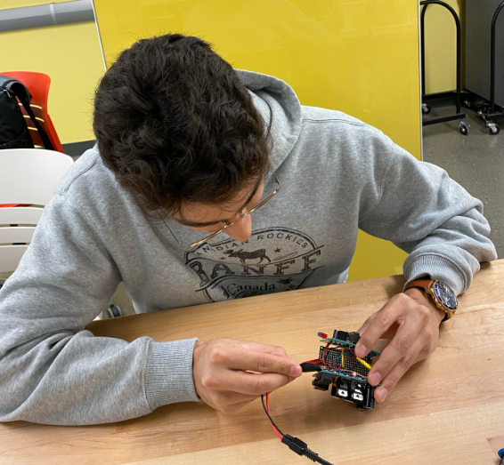

The first iteration of the project was a musical tesla coil.
This was really cool idea with a lot complex components but sadly had to be discarded because the more that we researched the topic the more we
realised how dangerous it was and decided to pivot away. The dangerous part was that if the tesla coil were to shoot electrical arcs
out the required voltage to reach 1 centimetre was 30 000 volts!
We needed the arc to cover a gap of about 5 centimeters so this would not work for us.
Second iteration: CVC 9000
We pivoted towards a product that still played music just a lot more safely.
A device where the user can control the volume with a clap of the hands.
This is the CVC 9000.

CVC stands for “Clapping Volume Controller”,
and the 9000 is for the 9000 iterations we had to go through to make this thing work.
How it works is when the user claps once the volume increases, two claps the volume
decreases, and three claps the speakers are muted. The speakers are driven by an
amplifier circuit which takes input from a device like a phone or laptop.
The most challenging part about this project was getting everything onto protoboard
and behaving like our set up on solder-less breadboard. We kept having issues with
the protoboard like the microphone not picking up our claps, but we were able to
trouble shoot and ended up just being a bad connection in the circuit. Below is a technical
description and a product demostration.
Main takeaway:

• Getting the experience of working in a group on a project that involves a
lot of technical parts is the most important thing I got from this project. I believe that this experience
has prepared me for how to manage future project groups and has taught me that a good team is one that
communicates and helps each other out when necessary.